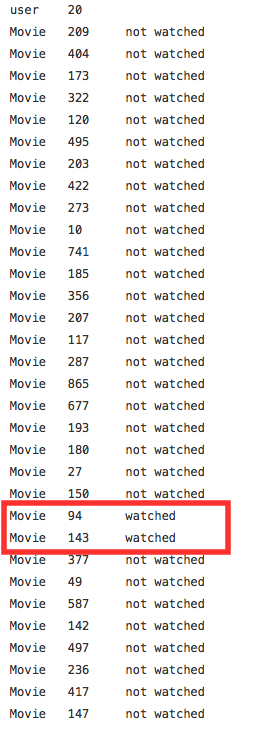
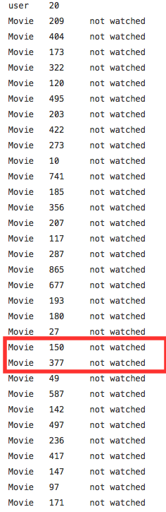
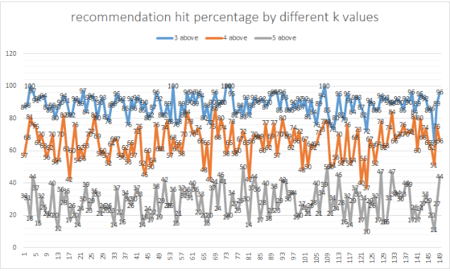

Movie Recommendationsusing Singular Value Decomposition
Group members: Boogun Choi, Genevieve Johnson, Zhengnan Hong
Low-rank matrix approximation
Approximate a matrix A with another matrix A' (truncated) which has a specific rank k
Apply Singular Value Decomposition
A = UΣV
A' = UΣ'V
where Σ' is the same matrix as Σ except that it contains only the k largest singular values
Adjustments made to adjusted ratings in matrix B and how these adjustments affected the recommendations
Environment
- Development: Python3
- Scipy
- Numpy
- linalg( scipy.sparse )
- Test & Evaluation: Shell, Python3, excel
- Working Environment: Github, GoogleDoc, reveal.js
Work Flow
- Top-Ten Movie Recommendation for user i
- Fix Features on the Recommendation System
- Accomodated k value
- Top-N Movie Reccommendation for user i
- Main-Algorithms improvement
Top-Ten Movie Recommendation for user i
- Done:
- Simple SVD by python library
- Recommends top10 movieID
- Visual Observation for the evaulation of result
- Problem:
- No movie name
- Recommendting some Watched Movie
Fix | Added Features
- Done:
- Movie-Name Conversion
- Recommending only Watched Movie
Test for Remove watched movie
(Left to Right ) Function Not Applied, Function Applied


Accomodated K value
After k = 26, the order of top 10 movies changed, but there were no new movies added up in the top-10
Tests for changes in K

Top-N Movie Recommendation for User I Final Version
Main-Algorithms Improvements
- Purpose:
- To Decrease run-time / processing-time of System
- To Increase Predictability
- Tried:
- Mean Square Error
- Accomodation of K value
- MAE for Adjusted Rating
Adjustments made to adjusted ratings in matrix B and how these adjustments affected the recommendations
Account for bias in ratings
r'ij = rij - ui - mj
Improve our recommendations?
r'ij = rij - [(global average rating*L - sum of user's ratings) / (L + number of user's ratings)] - [(global average rating*L - sum of movie's ratings) / (L + number of movie's ratings)]
Calculate Mean Absolute Error (MAE)
MAE = (Σ|rij-r'ij|) / N
N is the total number of ratings
Compare MAE's
| Avg. MAE for 1st approach | 7.05972 |
| Avg. MAE for 2nd approach (L = 100) | 7.086661555 |
| Avg. MAE for 2nd approach (L = 1,000,000) | 7.059724242 |
Program Flow
MainClass:
recommendMovieForUser
svd
MovieTitleLookUp
recommendMovieForUser => svd => movieTitleLookUp => Recommend Top 10 Movie
Advancements in the Future
Caching Method
- "Expensive" SVD
- Regular Update
Small Matrix
Example, if user X is a woman looking for recommendations of horror movies, only use ratings provided by other women who have watched horror movies.
Central DB
No reading data from file system, but use one central DB
- Increase Processing Time
- Regular update Easy